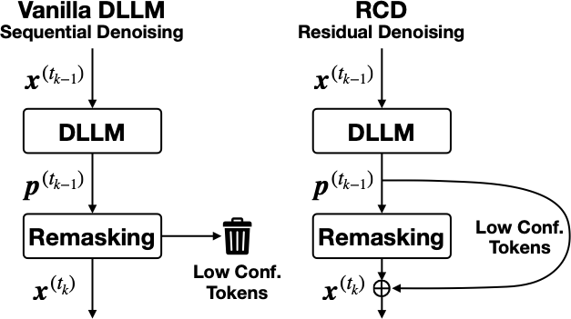
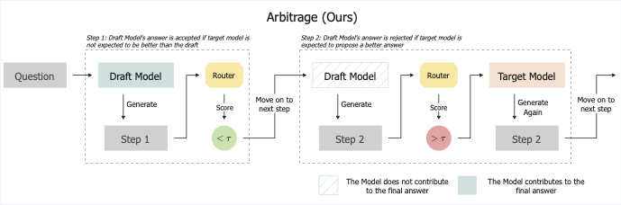

Education
-
UC Berkeley — M.S. EECS, GPA 4.0/4.0; Advisor: Kurt Keutzer
-
UC Berkeley — Honors B.S. EECS; Honors B.A. Mathematics;
Phi Beta Kappa
Research Interests
Efficient Machine Learning; Large-scale ML Systems; Optimization Models; Natural Language Processing.
Publications

Residual Context Diffusion: Unleashing the Potential of Diffusion LLMs via Residual Denoising
Yuezhou Hu*, Harman Singh*, Monishwaran Maheswaran*,
Haocheng Xi, Coleman Hooper, Jintao Zhang, Aditya Tomar,
Michael W. Mahoney, Sewon Min, Mehrdad Farajtabar, Kurt Keutzer, Amir Gholami†, Chenfeng Xu†
Preprint 2026
project page
arXiv
code
models

Arbitrage: Efficient Reasoning via Advantage-Aware Speculation
Monishwaran Maheswaran*, Rishabh Tiwari*, Yuezhou Hu*, Kerem Dilmen,
Coleman Hooper, Haocheng Xi, Nicholas Lee, Mehrdad Farajtabar, Michael W. Mahoney, Kurt Keutzer, Amir
Gholami
Preprint 2025
project page
arXiv
code
ETS: Efficient Tree Search for Inference-Time Scaling
Coleman Hooper, Sehoon Kim, Suhong Moon, Kerem Dilmen, Monishwaran
Maheswaran,
Nicholas Lee, Michael W. Mahoney, Sophia Shao, Kurt Keutzer, Amir Gholami
Preprint 2025
arXiv
Squeezed Attention: Accelerating Long-Context LLM Inference
Coleman Hooper*, Sehoon Kim*, Hiva Mohammadzadeh, Monishwaran Maheswaran,
June Paik, Michael W. Mahoney, Kurt Keutzer, Amir Gholami
Main Track @ ACL 2025
arXiv
code
Summation Identities
Monishwaran Maheswaran, Oliver Knill
Harvard University Mathematics Department, 2017
paper
Undergraduate Thesis
Scaling Laws and Training Dynamics in Extremely Wide Neural Networks — UC Berkeley.
Empirical and theoretical analysis of loss landscapes, minima distribution, and weight evolution in wide
networks.
Supervisors: Prof. Federico Pasqualotto (Mathematics).
Awards
- 2023 — Phi Beta Kappa
For academic excellence in a broad array of undergraduate courses in the liberal arts and sciences. Top
1/10th of UC Berkeley graduates campus wide in terms of GPA.
- 2022 — Texas Instruments–UC Berkeley Class Design Contest Award
For efficient design of new high performance hardware systems for signal processing, custom manufactured and
assembled for an ASIC project funded by EECS Department.
- 2022 — Tau Beta Pi National Engineering Honor Society
For outstanding performance in Engineering. Top 1/8th of UC Berkeley College of Engineering in terms of
GPA.
- 2021 — IEEE-Eta Kappa Nu National Electrical Engineering Honor Society (HKN)
For outstanding performance in EECS. Top 1/4th of UC Berkeley EECS students in terms of GPA.
- 2019 — INK Fellowship
INK identifies and nurtures 20 young achievers worldwide who are passionate to redefine the fields they are
in.
Invited Talks & Interviews
Beyond Research
- Besides my academic work, I love to teach. I share my projects and knowledge through numerous international keynotes and TEDx talks.
- Out of pure interest, I spend time analyzing the works of Friedrich Nietzsche, Ludwig Wittgenstein, and Bertrand Russell.
- I love endurance sports: I run ultramarathons, surf in San Francisco, and used to row at the California Lightweight Rowing Club at UC Berkeley.